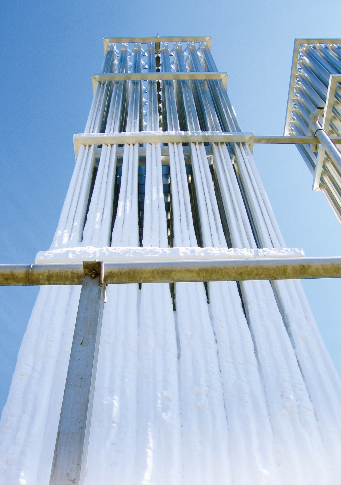

Kunnskapsgrunnlag for
Omsetningskrav i skipsfarten
Miljødirektoratet og Sjøfartsdirektoratet har sammen utredet et teknisk kunnskapsgrunnlag for et
mulig omsetningskrav i skipsfart på oppdrag fra Klima- og miljødepartementet.
•••
Av Linn Therese Skår Hosteland,
linn@kystrederiene.no
linn@kystrederiene.no
DNV GL har levert et underlag til
kunnskapsgrunnlaget hvor de har
sett på tekniske begrensninger for
bruk av biodrivstoff. Kunnskaps-
grunnlaget viser at en fremover i
videre arbeid bør være særlig opp-
merksom på tekniske utfordringer
ved innblanding av biodiesel som be-
står av FAME (fatty acid metyl ester).
Biodiesel som består av HVO (hydro-
treated vegetable oil) har ikke de
samme tekniske utfordringene, men
tilgjengelighet og konkurranse med
innblanding i andre transport-
segmenter kan være en utfordring.
Det konkluderes også med at biogass
kan benyttes uten vesentlige modi-
fikasjoner i eksisterende LNG skip.
DNV GL estimerer at totalt 6700
skip oppholder seg i norske farvann,
og antar at de skipene som oppholder
seg 80-100 % av tiden i norske far-
vann i stor grad fyller drivstoff i
Norge. Dermed er de som vil kunne
få innblanding av biodiesel i driv-
stoffet og tilsvarer ca. 1000 skip i
2020. Dersom man får en betydelig
grad av elektrifisering, bruk av
hydrogen og plug in hybrid i skips-
sektoren inn mot 2030, vil antall skip
som er aktuelle for innblanding av
biodiesel reduseres.
I dag anslås at 60 skip er aktuelle
for LNG og at 180 skip vil være ak-
tuelle for innblanding av biogass i
LNG i 2030, men framtidig utvikling
for LNG skip er usikker. Hvorvidt LNG
skip også vil fylle drivstoff i utlandet,
dersom prisen på norsk LNG inn-
blandet biogass øker, er ukjent og
påpekes bør utredes videre.
LNG brukes i dag i 61 skip i norske
farvann. LBG (Liquid Biogas) anses å
være en god løsning for skip med gass-
motor og dual fuel motor, da for-
brenning av LBG i stedet for LNG ikke
krever oppgradering av motor, tank
og rørsystemer. LNG og LBG har de
samme tekniske anvendelses-
områdene, kan blandes og kan be-
nyttes om hverandre på skip. Det
for-
ventes ikke endring i driftssikkerhet
ved en erstatning av LBG for LNG.
LBG reduserer NOx, SOx og par-
tikkelutslipp på lik linje med natur-
gass/LNG, det vil si en tilnærmet
eliminering av SOx og partikkel-
utslipp, mens NOx-utslippene kan
reduseres med over 80 % avhengig av
motorteknologi. Høytrykks-gass-
motorer vil ha høyere utslipp av NOx.
Tilgangen på LBG er begrenset i
Norge i dag, men det forventes økende
tilgjengelighet fremover. Produk-
sjonen
av biogass som drivstoff er i
vekst og vil ifølge Energigass Norge
gå fra 120 GWh i 2015 til 300 GWh i
2020. Dette tilsvarer en energi-
mengde på om lag 30 mill. liter diesel
i 2020.
For LBG er markedet svært
umodent, med enda større
usikkerhet i utsalgspris. Det er få
aktører i det norske markedet og
dermed liten konkurranse. I tidligere
studier er drivstoffkostnadene for
LBG antatt å være tre ganger så høy
som for MGO.
Innblanding av biodrivstoff kan
medføre tekniske utfordringer som
må løses om bord på skipene som
skal bruke drivstoffet. For FAME for-
ventes merinvesteringene å være
lave for nybygg, og noe høyere for
seilende skip. Motorprodusenten
MAN B &W Diesel har indikert en
merkostnad på inntil 5 % av skipets
nybyggkostnad for modifisering av
skipet for å kunne bruke biodrivstoff.
Innblanding av LBG vil trolig ikke
medføre kostnader til tekniske
modifikasjoner dersom skipet er til-
rettelagt for LNG. Videre anbefalt ut-
redningsarbeid før man vurderer et
eventuelt omsetningskrav for bio-
gass. Fordelen med å benytte biogass
i skipsfart er at LNG-skipene eks-
isterer, og det krever ingen tek-
nologiendring for å ta biogassen i
bruk i disse. Man kan se for seg at en
høy innblanding av biogass (LBG) i
LNG-skip vil kunne stå for en be-
tydelig del av et omsetningskrav.
For å eventuelt etablere et omset-
ningskrav som inkluderer biogass er
det nødvendig å skaffe oversikt over
tilgjengelig biogass av nødvendig
kvalitet og å se på hvordan distri-
busjon av denne fra produksjon til
dagens LNG infrastruktur for skip
kan løses. Det er ikke ønskelig at et
omsetningskrav utformes slik at
eventuelle ekstrakostnader forbundet
med LBG kun legges på LNG skip.
Av den tilgjengelige grønne tekno-
logi for skip, viser forskning at gass
hybrid (dvs gassmotor + batteri) gir
størst miljøgevinst (ref Ulvan/Grønt
kystfartsprogram). Det er dette
konseptet som Hurtigruten nå
kombinerer med biogass i en LBG-
løsning. Det må forventes at biogass
vil være avgiftsfri.
Konkurranseutsatt kommersiell
skipsfart er sårbar for miljøinveste-
ringer ut over IMOs krav. Konsepter
for diesel+akselgenerator+batteri bør
HVO:
Hydrotreated vegetable oil,
også kalt HEFA. En form for
biodiesel.
LNG:
Flytende naturgass,
hovedsakelig av metan.
LBG:
Flytende biogass. Biogass
av metan og CO
2
kan kalles
biometan. LBG er biogass som er
nedkjølt og kondensert til
flytende form. Ved forbrenning
anses biogass og naturgass som
sammenlignbare når det gjelder
dannelse av forbrennings-
produkter. For at biogass kan
anvendes som drivstoff på et skip
tilsvarende LNG, må gassen
gjennomgå en oppgradering, som
innebærer at den tørkes, renses,
kjøles og kondenseres.
MGO:
Marin gassolje. MGO er det
dominerende marine drivstoffet i
salg i Norge.